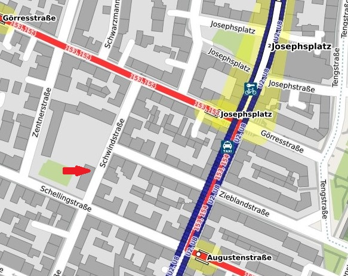

Navigation
Trainingszeiten
in München
Montag und Donnerstag
Training von 19:00 bis 21 Uhr
Sporthalle der Schwindschule, Schwindstr. 19
Das Training ist ab 16 Jahren und nach oben offen.
Die Teilnahme an einem Probetraining ist jederzeit möglich
zusätzlich Kinder Karate-Training
Sporthalle der Schwindschule, Schwindstr. 19
Montag Training von 17:30 bis 19:00 Uhr
Donnerstag Training von 18:00 bis 19:00 Uhr
Für Kinder ab 10 Jahren. Bitte vorher per Mail anfragen.
in Hohenbrunn
Montag
Training von 19:15 bis 20:45 Uhr
in Hohenbrunn im Gymnastikraum am Sportplatz
Freitag
Training von 18:00 bis 19:30 Uhr
in Riemerling im Sportcampus (Georginenstr. 2), Tanzraum 2
Das Training ist als Familientraining in Begleitung eines Elternteils ab 11 Jahren möglich, ansonsten ab 15 Jahren – und nach oben offen.
Die Teilnahme an einem Probetraining ist jederzeit möglich
Rückfragen bei:
Andreas Theuer, 6. Dan, Shihan
Tel.: 089 / 35 06 29 93
andi@uechi-ryu-muenchen.de
Hier eine Karte für die Halle der Schwindschule:
